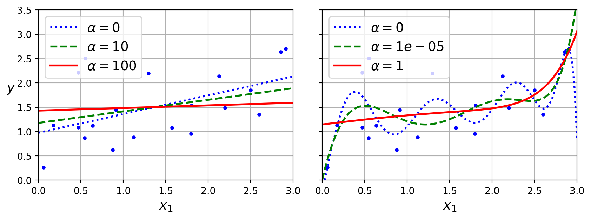
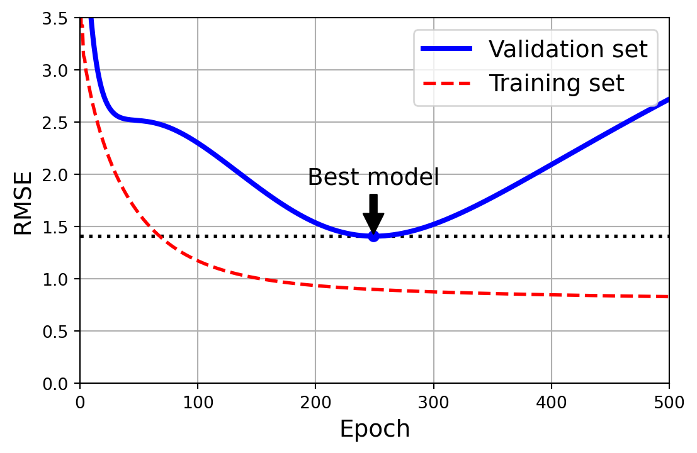
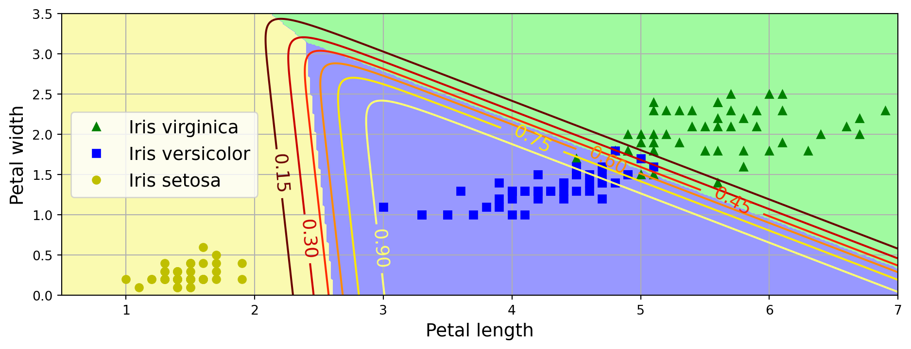

import sys
assert sys.version_info >= (3, 7)Anomaly Detection
Chapter 4 – Training Models
This notebook contains all the sample code and solutions to the exercises in chapter 4.
|
|

|
This project requires Python 3.7 or above:
It also requires Scikit-Learn ≥ 1.0.1:
from packaging import version
import sklearn
assert version.parse(sklearn.__version__) >= version.parse("1.0.1")As we did in previous chapters, let’s define the default font sizes to make the figures prettier:
import matplotlib.pyplot as plt
plt.rc('font', size=14)
plt.rc('axes', labelsize=14, titlesize=14)
plt.rc('legend', fontsize=14)
plt.rc('xtick', labelsize=10)
plt.rc('ytick', labelsize=10)And let’s create the images/training_linear_models folder (if it doesn’t already exist), and define the save_fig() function which is used through this notebook to save the figures in high-res for the book:
from pathlib import Path
IMAGES_PATH = Path() / "images" / "training_linear_models"
IMAGES_PATH.mkdir(parents=True, exist_ok=True)
def save_fig(fig_id, tight_layout=True, fig_extension="png", resolution=300):
path = IMAGES_PATH / f"{fig_id}.{fig_extension}"
if tight_layout:
plt.tight_layout()
plt.savefig(path, format=fig_extension, dpi=resolution)Linear Regression
The Normal Equation
import numpy as np
np.random.seed(42) # to make this code example reproducible
m = 100 # number of instances
X = 2 * np.random.rand(m, 1) # column vector
y = 4 + 3 * X + np.random.randn(m, 1) # column vector# extra code – generates and saves Figure 4–1
import matplotlib.pyplot as plt
plt.figure(figsize=(6, 4))
plt.plot(X, y, "b.")
plt.xlabel("$x_1$")
plt.ylabel("$y$", rotation=0)
plt.axis([0, 2, 0, 15])
plt.grid()
save_fig("generated_data_plot")
plt.show()
from sklearn.preprocessing import add_dummy_feature
X_b = add_dummy_feature(X) # add x0 = 1 to each instance
theta_best = np.linalg.inv(X_b.T @ X_b) @ X_b.T @ ytheta_bestarray([[4.21509616],
[2.77011339]])X_new = np.array([[0], [2]])
X_new_b = add_dummy_feature(X_new) # add x0 = 1 to each instance
y_predict = X_new_b @ theta_best
y_predictarray([[4.21509616],
[9.75532293]])import matplotlib.pyplot as plt
plt.figure(figsize=(6, 4)) # extra code – not needed, just formatting
plt.plot(X_new, y_predict, "r-", label="Predictions")
plt.plot(X, y, "b.")
# extra code – beautifies and saves Figure 4–2
plt.xlabel("$x_1$")
plt.ylabel("$y$", rotation=0)
plt.axis([0, 2, 0, 15])
plt.grid()
plt.legend(loc="upper left")
save_fig("linear_model_predictions_plot")
plt.show()
from sklearn.linear_model import LinearRegression
lin_reg = LinearRegression()
lin_reg.fit(X, y)
lin_reg.intercept_, lin_reg.coef_(array([4.21509616]), array([[2.77011339]]))lin_reg.predict(X_new)array([[4.21509616],
[9.75532293]])The LinearRegression class is based on the scipy.linalg.lstsq() function (the name stands for “least squares”), which you could call directly:
theta_best_svd, residuals, rank, s = np.linalg.lstsq(X_b, y, rcond=1e-6)
theta_best_svdarray([[4.21509616],
[2.77011339]])This function computes \(\mathbf{X}^+\mathbf{y}\), where \(\mathbf{X}^{+}\) is the pseudoinverse of \(\mathbf{X}\) (specifically the Moore-Penrose inverse). You can use np.linalg.pinv() to compute the pseudoinverse directly:
np.linalg.pinv(X_b) @ yarray([[4.21509616],
[2.77011339]])Gradient Descent
Batch Gradient Descent
eta = 0.1 # learning rate
n_epochs = 1000
m = len(X_b) # number of instances
np.random.seed(42)
theta = np.random.randn(2, 1) # randomly initialized model parameters
for epoch in range(n_epochs):
gradients = 2 / m * X_b.T @ (X_b @ theta - y)
theta = theta - eta * gradientsThe trained model parameters:
thetaarray([[4.21509616],
[2.77011339]])# extra code – generates and saves Figure 4–8
import matplotlib as mpl
def plot_gradient_descent(theta, eta):
m = len(X_b)
plt.plot(X, y, "b.")
n_epochs = 1000
n_shown = 20
theta_path = []
for epoch in range(n_epochs):
if epoch < n_shown:
y_predict = X_new_b @ theta
color = mpl.colors.rgb2hex(plt.cm.OrRd(epoch / n_shown + 0.15))
plt.plot(X_new, y_predict, linestyle="solid", color=color)
gradients = 2 / m * X_b.T @ (X_b @ theta - y)
theta = theta - eta * gradients
theta_path.append(theta)
plt.xlabel("$x_1$")
plt.axis([0, 2, 0, 15])
plt.grid()
plt.title(fr"$\eta = {eta}$")
return theta_path
np.random.seed(42)
theta = np.random.randn(2, 1) # random initialization
plt.figure(figsize=(10, 4))
plt.subplot(131)
plot_gradient_descent(theta, eta=0.02)
plt.ylabel("$y$", rotation=0)
plt.subplot(132)
theta_path_bgd = plot_gradient_descent(theta, eta=0.1)
plt.gca().axes.yaxis.set_ticklabels([])
plt.subplot(133)
plt.gca().axes.yaxis.set_ticklabels([])
plot_gradient_descent(theta, eta=0.5)
save_fig("gradient_descent_plot")
plt.show()Stochastic Gradient Descent
theta_path_sgd = [] # extra code – we need to store the path of theta in the
# parameter space to plot the next figuren_epochs = 50
t0, t1 = 5, 50 # learning schedule hyperparameters
def learning_schedule(t):
return t0 / (t + t1)
np.random.seed(42)
theta = np.random.randn(2, 1) # random initialization
n_shown = 20 # extra code – just needed to generate the figure below
plt.figure(figsize=(6, 4)) # extra code – not needed, just formatting
for epoch in range(n_epochs):
for iteration in range(m):
# extra code – these 4 lines are used to generate the figure
if epoch == 0 and iteration < n_shown:
y_predict = X_new_b @ theta
color = mpl.colors.rgb2hex(plt.cm.OrRd(iteration / n_shown + 0.15))
plt.plot(X_new, y_predict, color=color)
random_index = np.random.randint(m)
xi = X_b[random_index : random_index + 1]
yi = y[random_index : random_index + 1]
gradients = 2 * xi.T @ (xi @ theta - yi) # for SGD, do not divide by m
eta = learning_schedule(epoch * m + iteration)
theta = theta - eta * gradients
theta_path_sgd.append(theta) # extra code – to generate the figure
# extra code – this section beautifies and saves Figure 4–10
plt.plot(X, y, "b.")
plt.xlabel("$x_1$")
plt.ylabel("$y$", rotation=0)
plt.axis([0, 2, 0, 15])
plt.grid()
save_fig("sgd_plot")
plt.show()
thetaarray([[4.21076011],
[2.74856079]])from sklearn.linear_model import SGDRegressor
sgd_reg = SGDRegressor(max_iter=1000, tol=1e-5, penalty=None, eta0=0.01,
n_iter_no_change=100, random_state=42)
sgd_reg.fit(X, y.ravel()) # y.ravel() because fit() expects 1D targetsSGDRegressor(n_iter_no_change=100, penalty=None, random_state=42, tol=1e-05)In a Jupyter environment, please rerun this cell to show the HTML representation or trust the notebook.
On GitHub, the HTML representation is unable to render, please try loading this page with nbviewer.org.
SGDRegressor(n_iter_no_change=100, penalty=None, random_state=42, tol=1e-05)
sgd_reg.intercept_, sgd_reg.coef_(array([4.21278812]), array([2.77270267]))Mini-batch gradient descent
The code in this section is used to generate the next figure, it is not in the book.
# extra code – this cell generates and saves Figure 4–11
from math import ceil
n_epochs = 50
minibatch_size = 20
n_batches_per_epoch = ceil(m / minibatch_size)
np.random.seed(42)
theta = np.random.randn(2, 1) # random initialization
t0, t1 = 200, 1000 # learning schedule hyperparameters
def learning_schedule(t):
return t0 / (t + t1)
theta_path_mgd = []
for epoch in range(n_epochs):
shuffled_indices = np.random.permutation(m)
X_b_shuffled = X_b[shuffled_indices]
y_shuffled = y[shuffled_indices]
for iteration in range(0, n_batches_per_epoch):
idx = iteration * minibatch_size
xi = X_b_shuffled[idx : idx + minibatch_size]
yi = y_shuffled[idx : idx + minibatch_size]
gradients = 2 / minibatch_size * xi.T @ (xi @ theta - yi)
eta = learning_schedule(iteration)
theta = theta - eta * gradients
theta_path_mgd.append(theta)
theta_path_bgd = np.array(theta_path_bgd)
theta_path_sgd = np.array(theta_path_sgd)
theta_path_mgd = np.array(theta_path_mgd)
plt.figure(figsize=(7, 4))
plt.plot(theta_path_sgd[:, 0], theta_path_sgd[:, 1], "r-s", linewidth=1,
label="Stochastic")
plt.plot(theta_path_mgd[:, 0], theta_path_mgd[:, 1], "g-+", linewidth=2,
label="Mini-batch")
plt.plot(theta_path_bgd[:, 0], theta_path_bgd[:, 1], "b-o", linewidth=3,
label="Batch")
plt.legend(loc="upper left")
plt.xlabel(r"$\theta_0$")
plt.ylabel(r"$\theta_1$ ", rotation=0)
plt.axis([2.6, 4.6, 2.3, 3.4])
plt.grid()
save_fig("gradient_descent_paths_plot")
plt.show()Polynomial Regression
np.random.seed(42)
m = 100
X = 6 * np.random.rand(m, 1) - 3
y = 0.5 * X ** 2 + X + 2 + np.random.randn(m, 1)# extra code – this cell generates and saves Figure 4–12
plt.figure(figsize=(6, 4))
plt.plot(X, y, "b.")
plt.xlabel("$x_1$")
plt.ylabel("$y$", rotation=0)
plt.axis([-3, 3, 0, 10])
plt.grid()
save_fig("quadratic_data_plot")
plt.show()from sklearn.preprocessing import PolynomialFeatures
poly_features = PolynomialFeatures(degree=2, include_bias=False)
X_poly = poly_features.fit_transform(X)
X[0]array([-0.75275929])X_poly[0]array([-0.75275929, 0.56664654])lin_reg = LinearRegression()
lin_reg.fit(X_poly, y)
lin_reg.intercept_, lin_reg.coef_(array([1.78134581]), array([[0.93366893, 0.56456263]]))# extra code – this cell generates and saves Figure 4–13
X_new = np.linspace(-3, 3, 100).reshape(100, 1)
X_new_poly = poly_features.transform(X_new)
y_new = lin_reg.predict(X_new_poly)
plt.figure(figsize=(6, 4))
plt.plot(X, y, "b.")
plt.plot(X_new, y_new, "r-", linewidth=2, label="Predictions")
plt.xlabel("$x_1$")
plt.ylabel("$y$", rotation=0)
plt.legend(loc="upper left")
plt.axis([-3, 3, 0, 10])
plt.grid()
save_fig("quadratic_predictions_plot")
plt.show()
# extra code – this cell generates and saves Figure 4–14
from sklearn.preprocessing import StandardScaler
from sklearn.pipeline import make_pipeline
plt.figure(figsize=(6, 4))
for style, width, degree in (("r-+", 2, 1), ("b--", 2, 2), ("g-", 1, 300)):
polybig_features = PolynomialFeatures(degree=degree, include_bias=False)
std_scaler = StandardScaler()
lin_reg = LinearRegression()
polynomial_regression = make_pipeline(polybig_features, std_scaler, lin_reg)
polynomial_regression.fit(X, y)
y_newbig = polynomial_regression.predict(X_new)
label = f"{degree} degree{'s' if degree > 1 else ''}"
plt.plot(X_new, y_newbig, style, label=label, linewidth=width)
plt.plot(X, y, "b.", linewidth=3)
plt.legend(loc="upper left")
plt.xlabel("$x_1$")
plt.ylabel("$y$", rotation=0)
plt.axis([-3, 3, 0, 10])
plt.grid()
save_fig("high_degree_polynomials_plot")
plt.show()
Learning Curves
from sklearn.model_selection import learning_curve
train_sizes, train_scores, valid_scores = learning_curve(
LinearRegression(), X, y, train_sizes=np.linspace(0.01, 1.0, 40), cv=5,
scoring="neg_root_mean_squared_error")
train_errors = -train_scores.mean(axis=1)
valid_errors = -valid_scores.mean(axis=1)
plt.figure(figsize=(6, 4)) # extra code – not needed, just formatting
plt.plot(train_sizes, train_errors, "r-+", linewidth=2, label="train")
plt.plot(train_sizes, valid_errors, "b-", linewidth=3, label="valid")
# extra code – beautifies and saves Figure 4–15
plt.xlabel("Training set size")
plt.ylabel("RMSE")
plt.grid()
plt.legend(loc="upper right")
plt.axis([0, 80, 0, 2.5])
save_fig("underfitting_learning_curves_plot")
plt.show()
from sklearn.pipeline import make_pipeline
polynomial_regression = make_pipeline(
PolynomialFeatures(degree=10, include_bias=False),
LinearRegression())
train_sizes, train_scores, valid_scores = learning_curve(
polynomial_regression, X, y, train_sizes=np.linspace(0.01, 1.0, 40), cv=5,
scoring="neg_root_mean_squared_error")# extra code – generates and saves Figure 4–16
train_errors = -train_scores.mean(axis=1)
valid_errors = -valid_scores.mean(axis=1)
plt.figure(figsize=(6, 4))
plt.plot(train_sizes, train_errors, "r-+", linewidth=2, label="train")
plt.plot(train_sizes, valid_errors, "b-", linewidth=3, label="valid")
plt.legend(loc="upper right")
plt.xlabel("Training set size")
plt.ylabel("RMSE")
plt.grid()
plt.axis([0, 80, 0, 2.5])
save_fig("learning_curves_plot")
plt.show()
Regularized Linear Models
Ridge Regression
Let’s generate a very small and noisy linear dataset:
# extra code – we've done this type of generation several times before
np.random.seed(42)
m = 20
X = 3 * np.random.rand(m, 1)
y = 1 + 0.5 * X + np.random.randn(m, 1) / 1.5
X_new = np.linspace(0, 3, 100).reshape(100, 1)# extra code – a quick peek at the dataset we just generated
plt.figure(figsize=(6, 4))
plt.plot(X, y, ".")
plt.xlabel("$x_1$")
plt.ylabel("$y$ ", rotation=0)
plt.axis([0, 3, 0, 3.5])
plt.grid()
plt.show()
from sklearn.linear_model import Ridge
ridge_reg = Ridge(alpha=0.1, solver="cholesky")
ridge_reg.fit(X, y)
ridge_reg.predict([[1.5]])array([[1.55325833]])# extra code – this cell generates and saves Figure 4–17
def plot_model(model_class, polynomial, alphas, **model_kwargs):
plt.plot(X, y, "b.", linewidth=3)
for alpha, style in zip(alphas, ("b:", "g--", "r-")):
if alpha > 0:
model = model_class(alpha, **model_kwargs)
else:
model = LinearRegression()
if polynomial:
model = make_pipeline(
PolynomialFeatures(degree=10, include_bias=False),
StandardScaler(),
model)
model.fit(X, y)
y_new_regul = model.predict(X_new)
plt.plot(X_new, y_new_regul, style, linewidth=2,
label=fr"$\alpha = {alpha}$")
plt.legend(loc="upper left")
plt.xlabel("$x_1$")
plt.axis([0, 3, 0, 3.5])
plt.grid()
plt.figure(figsize=(9, 3.5))
plt.subplot(121)
plot_model(Ridge, polynomial=False, alphas=(0, 10, 100), random_state=42)
plt.ylabel("$y$ ", rotation=0)
plt.subplot(122)
plot_model(Ridge, polynomial=True, alphas=(0, 10**-5, 1), random_state=42)
plt.gca().axes.yaxis.set_ticklabels([])
save_fig("ridge_regression_plot")
plt.show()
sgd_reg = SGDRegressor(penalty="l2", alpha=0.1 / m, tol=None,
max_iter=1000, eta0=0.01, random_state=42)
sgd_reg.fit(X, y.ravel()) # y.ravel() because fit() expects 1D targets
sgd_reg.predict([[1.5]])array([1.55302613])# extra code – show that we get roughly the same solution as earlier when
# we use Stochastic Average GD (solver="sag")
ridge_reg = Ridge(alpha=0.1, solver="sag", random_state=42)
ridge_reg.fit(X, y)
ridge_reg.predict([[1.5]])array([[1.55326019]])# extra code – shows the closed form solution of Ridge regression,
# compare with the next Ridge model's learned parameters below
alpha = 0.1
A = np.array([[0., 0.], [0., 1.]])
X_b = np.c_[np.ones(m), X]
np.linalg.inv(X_b.T @ X_b + alpha * A) @ X_b.T @ yarray([[0.97898394],
[0.3828496 ]])ridge_reg.intercept_, ridge_reg.coef_ # extra code(array([0.97896386]), array([[0.38286422]]))Lasso Regression
from sklearn.linear_model import Lasso
lasso_reg = Lasso(alpha=0.1)
lasso_reg.fit(X, y)
lasso_reg.predict([[1.5]])array([1.53788174])# extra code – this cell generates and saves Figure 4–18
plt.figure(figsize=(9, 3.5))
plt.subplot(121)
plot_model(Lasso, polynomial=False, alphas=(0, 0.1, 1), random_state=42)
plt.ylabel("$y$ ", rotation=0)
plt.subplot(122)
plot_model(Lasso, polynomial=True, alphas=(0, 1e-2, 1), random_state=42)
plt.gca().axes.yaxis.set_ticklabels([])
save_fig("lasso_regression_plot")
plt.show()
# extra code – this BIG cell generates and saves Figure 4–19
t1a, t1b, t2a, t2b = -1, 3, -1.5, 1.5
t1s = np.linspace(t1a, t1b, 500)
t2s = np.linspace(t2a, t2b, 500)
t1, t2 = np.meshgrid(t1s, t2s)
T = np.c_[t1.ravel(), t2.ravel()]
Xr = np.array([[1, 1], [1, -1], [1, 0.5]])
yr = 2 * Xr[:, :1] + 0.5 * Xr[:, 1:]
J = (1 / len(Xr) * ((T @ Xr.T - yr.T) ** 2).sum(axis=1)).reshape(t1.shape)
N1 = np.linalg.norm(T, ord=1, axis=1).reshape(t1.shape)
N2 = np.linalg.norm(T, ord=2, axis=1).reshape(t1.shape)
t_min_idx = np.unravel_index(J.argmin(), J.shape)
t1_min, t2_min = t1[t_min_idx], t2[t_min_idx]
t_init = np.array([[0.25], [-1]])
def bgd_path(theta, X, y, l1, l2, core=1, eta=0.05, n_iterations=200):
path = [theta]
for iteration in range(n_iterations):
gradients = (core * 2 / len(X) * X.T @ (X @ theta - y)
+ l1 * np.sign(theta) + l2 * theta)
theta = theta - eta * gradients
path.append(theta)
return np.array(path)
fig, axes = plt.subplots(2, 2, sharex=True, sharey=True, figsize=(10.1, 8))
for i, N, l1, l2, title in ((0, N1, 2.0, 0, "Lasso"), (1, N2, 0, 2.0, "Ridge")):
JR = J + l1 * N1 + l2 * 0.5 * N2 ** 2
tr_min_idx = np.unravel_index(JR.argmin(), JR.shape)
t1r_min, t2r_min = t1[tr_min_idx], t2[tr_min_idx]
levels = np.exp(np.linspace(0, 1, 20)) - 1
levelsJ = levels * (J.max() - J.min()) + J.min()
levelsJR = levels * (JR.max() - JR.min()) + JR.min()
levelsN = np.linspace(0, N.max(), 10)
path_J = bgd_path(t_init, Xr, yr, l1=0, l2=0)
path_JR = bgd_path(t_init, Xr, yr, l1, l2)
path_N = bgd_path(theta=np.array([[2.0], [0.5]]), X=Xr, y=yr,
l1=np.sign(l1) / 3, l2=np.sign(l2), core=0)
ax = axes[i, 0]
ax.grid()
ax.axhline(y=0, color="k")
ax.axvline(x=0, color="k")
ax.contourf(t1, t2, N / 2.0, levels=levelsN)
ax.plot(path_N[:, 0], path_N[:, 1], "y--")
ax.plot(0, 0, "ys")
ax.plot(t1_min, t2_min, "ys")
ax.set_title(fr"$\ell_{i + 1}$ penalty")
ax.axis([t1a, t1b, t2a, t2b])
if i == 1:
ax.set_xlabel(r"$\theta_1$")
ax.set_ylabel(r"$\theta_2$", rotation=0)
ax = axes[i, 1]
ax.grid()
ax.axhline(y=0, color="k")
ax.axvline(x=0, color="k")
ax.contourf(t1, t2, JR, levels=levelsJR, alpha=0.9)
ax.plot(path_JR[:, 0], path_JR[:, 1], "w-o")
ax.plot(path_N[:, 0], path_N[:, 1], "y--")
ax.plot(0, 0, "ys")
ax.plot(t1_min, t2_min, "ys")
ax.plot(t1r_min, t2r_min, "rs")
ax.set_title(title)
ax.axis([t1a, t1b, t2a, t2b])
if i == 1:
ax.set_xlabel(r"$\theta_1$")
save_fig("lasso_vs_ridge_plot")
plt.show()
Elastic Net
from sklearn.linear_model import ElasticNet
elastic_net = ElasticNet(alpha=0.1, l1_ratio=0.5)
elastic_net.fit(X, y)
elastic_net.predict([[1.5]])array([1.54333232])Early Stopping
Let’s go back to the quadratic dataset we used earlier:
from copy import deepcopy
from sklearn.metrics import mean_squared_error
from sklearn.preprocessing import StandardScaler
# extra code – creates the same quadratic dataset as earlier and splits it
np.random.seed(42)
m = 100
X = 6 * np.random.rand(m, 1) - 3
y = 0.5 * X ** 2 + X + 2 + np.random.randn(m, 1)
X_train, y_train = X[: m // 2], y[: m // 2, 0]
X_valid, y_valid = X[m // 2 :], y[m // 2 :, 0]
preprocessing = make_pipeline(PolynomialFeatures(degree=90, include_bias=False),
StandardScaler())
X_train_prep = preprocessing.fit_transform(X_train)
X_valid_prep = preprocessing.transform(X_valid)
sgd_reg = SGDRegressor(penalty=None, eta0=0.002, random_state=42)
n_epochs = 500
best_valid_rmse = float('inf')
train_errors, val_errors = [], [] # extra code – it's for the figure below
for epoch in range(n_epochs):
sgd_reg.partial_fit(X_train_prep, y_train)
y_valid_predict = sgd_reg.predict(X_valid_prep)
val_error = mean_squared_error(y_valid, y_valid_predict, squared=False)
if val_error < best_valid_rmse:
best_valid_rmse = val_error
best_model = deepcopy(sgd_reg)
# extra code – we evaluate the train error and save it for the figure
y_train_predict = sgd_reg.predict(X_train_prep)
train_error = mean_squared_error(y_train, y_train_predict, squared=False)
val_errors.append(val_error)
train_errors.append(train_error)
# extra code – this section generates and saves Figure 4–20
best_epoch = np.argmin(val_errors)
plt.figure(figsize=(6, 4))
plt.annotate('Best model',
xy=(best_epoch, best_valid_rmse),
xytext=(best_epoch, best_valid_rmse + 0.5),
ha="center",
arrowprops=dict(facecolor='black', shrink=0.05))
plt.plot([0, n_epochs], [best_valid_rmse, best_valid_rmse], "k:", linewidth=2)
plt.plot(val_errors, "b-", linewidth=3, label="Validation set")
plt.plot(best_epoch, best_valid_rmse, "bo")
plt.plot(train_errors, "r--", linewidth=2, label="Training set")
plt.legend(loc="upper right")
plt.xlabel("Epoch")
plt.ylabel("RMSE")
plt.axis([0, n_epochs, 0, 3.5])
plt.grid()
save_fig("early_stopping_plot")
plt.show()
Logistic Regression
Estimating Probabilities
# extra code – generates and saves Figure 4–21
lim = 6
t = np.linspace(-lim, lim, 100)
sig = 1 / (1 + np.exp(-t))
plt.figure(figsize=(8, 3))
plt.plot([-lim, lim], [0, 0], "k-")
plt.plot([-lim, lim], [0.5, 0.5], "k:")
plt.plot([-lim, lim], [1, 1], "k:")
plt.plot([0, 0], [-1.1, 1.1], "k-")
plt.plot(t, sig, "b-", linewidth=2, label=r"$\sigma(t) = \dfrac{1}{1 + e^{-t}}$")
plt.xlabel("t")
plt.legend(loc="upper left")
plt.axis([-lim, lim, -0.1, 1.1])
plt.gca().set_yticks([0, 0.25, 0.5, 0.75, 1])
plt.grid()
save_fig("logistic_function_plot")
plt.show()
Decision Boundaries
from sklearn.datasets import load_iris
iris = load_iris(as_frame=True)
list(iris)['data',
'target',
'frame',
'target_names',
'DESCR',
'feature_names',
'filename',
'data_module']print(iris.DESCR) # extra code – it's a bit too long.. _iris_dataset:
Iris plants dataset
--------------------
**Data Set Characteristics:**
:Number of Instances: 150 (50 in each of three classes)
:Number of Attributes: 4 numeric, predictive attributes and the class
:Attribute Information:
- sepal length in cm
- sepal width in cm
- petal length in cm
- petal width in cm
- class:
- Iris-Setosa
- Iris-Versicolour
- Iris-Virginica
:Summary Statistics:
============== ==== ==== ======= ===== ====================
Min Max Mean SD Class Correlation
============== ==== ==== ======= ===== ====================
sepal length: 4.3 7.9 5.84 0.83 0.7826
sepal width: 2.0 4.4 3.05 0.43 -0.4194
petal length: 1.0 6.9 3.76 1.76 0.9490 (high!)
petal width: 0.1 2.5 1.20 0.76 0.9565 (high!)
============== ==== ==== ======= ===== ====================
:Missing Attribute Values: None
:Class Distribution: 33.3% for each of 3 classes.
:Creator: R.A. Fisher
:Donor: Michael Marshall (MARSHALL%PLU@io.arc.nasa.gov)
:Date: July, 1988
The famous Iris database, first used by Sir R.A. Fisher. The dataset is taken
from Fisher's paper. Note that it's the same as in R, but not as in the UCI
Machine Learning Repository, which has two wrong data points.
This is perhaps the best known database to be found in the
pattern recognition literature. Fisher's paper is a classic in the field and
is referenced frequently to this day. (See Duda & Hart, for example.) The
data set contains 3 classes of 50 instances each, where each class refers to a
type of iris plant. One class is linearly separable from the other 2; the
latter are NOT linearly separable from each other.
|details-start|
**References**
|details-split|
- Fisher, R.A. "The use of multiple measurements in taxonomic problems"
Annual Eugenics, 7, Part II, 179-188 (1936); also in "Contributions to
Mathematical Statistics" (John Wiley, NY, 1950).
- Duda, R.O., & Hart, P.E. (1973) Pattern Classification and Scene Analysis.
(Q327.D83) John Wiley & Sons. ISBN 0-471-22361-1. See page 218.
- Dasarathy, B.V. (1980) "Nosing Around the Neighborhood: A New System
Structure and Classification Rule for Recognition in Partially Exposed
Environments". IEEE Transactions on Pattern Analysis and Machine
Intelligence, Vol. PAMI-2, No. 1, 67-71.
- Gates, G.W. (1972) "The Reduced Nearest Neighbor Rule". IEEE Transactions
on Information Theory, May 1972, 431-433.
- See also: 1988 MLC Proceedings, 54-64. Cheeseman et al"s AUTOCLASS II
conceptual clustering system finds 3 classes in the data.
- Many, many more ...
|details-end|iris.data.head(3)| sepal length (cm) | sepal width (cm) | petal length (cm) | petal width (cm) | |
|---|---|---|---|---|
| 0 | 5.1 | 3.5 | 1.4 | 0.2 |
| 1 | 4.9 | 3.0 | 1.4 | 0.2 |
| 2 | 4.7 | 3.2 | 1.3 | 0.2 |
iris.target.head(3) # note that the instances are not shuffled0 0
1 0
2 0
Name: target, dtype: int64iris.target_namesarray(['setosa', 'versicolor', 'virginica'], dtype='<U10')from sklearn.linear_model import LogisticRegression
from sklearn.model_selection import train_test_split
X = iris.data[["petal width (cm)"]].values
y = iris.target_names[iris.target] == 'virginica'
X_train, X_test, y_train, y_test = train_test_split(X, y, random_state=42)
log_reg = LogisticRegression(random_state=42)
log_reg.fit(X_train, y_train)LogisticRegression(random_state=42)In a Jupyter environment, please rerun this cell to show the HTML representation or trust the notebook.
On GitHub, the HTML representation is unable to render, please try loading this page with nbviewer.org.
LogisticRegression(random_state=42)
X_new = np.linspace(0, 3, 1000).reshape(-1, 1) # reshape to get a column vector
y_proba = log_reg.predict_proba(X_new)
decision_boundary = X_new[y_proba[:, 1] >= 0.5][0, 0]
plt.figure(figsize=(8, 3)) # extra code – not needed, just formatting
plt.plot(X_new, y_proba[:, 0], "b--", linewidth=2,
label="Not Iris virginica proba")
plt.plot(X_new, y_proba[:, 1], "g-", linewidth=2, label="Iris virginica proba")
plt.plot([decision_boundary, decision_boundary], [0, 1], "k:", linewidth=2,
label="Decision boundary")
# extra code – this section beautifies and saves Figure 4–23
plt.arrow(x=decision_boundary, y=0.08, dx=-0.3, dy=0,
head_width=0.05, head_length=0.1, fc="b", ec="b")
plt.arrow(x=decision_boundary, y=0.92, dx=0.3, dy=0,
head_width=0.05, head_length=0.1, fc="g", ec="g")
plt.plot(X_train[y_train == 0], y_train[y_train == 0], "bs")
plt.plot(X_train[y_train == 1], y_train[y_train == 1], "g^")
plt.xlabel("Petal width (cm)")
plt.ylabel("Probability")
plt.legend(loc="center left")
plt.axis([0, 3, -0.02, 1.02])
plt.grid()
save_fig("logistic_regression_plot")
plt.show()decision_boundary1.6516516516516517log_reg.predict([[1.7], [1.5]])array([ True, False])# extra code – this cell generates and saves Figure 4–24
X = iris.data[["petal length (cm)", "petal width (cm)"]].values
y = iris.target_names[iris.target] == 'virginica'
X_train, X_test, y_train, y_test = train_test_split(X, y, random_state=42)
log_reg = LogisticRegression(C=2, random_state=42)
log_reg.fit(X_train, y_train)
# for the contour plot
x0, x1 = np.meshgrid(np.linspace(2.9, 7, 500).reshape(-1, 1),
np.linspace(0.8, 2.7, 200).reshape(-1, 1))
X_new = np.c_[x0.ravel(), x1.ravel()] # one instance per point on the figure
y_proba = log_reg.predict_proba(X_new)
zz = y_proba[:, 1].reshape(x0.shape)
# for the decision boundary
left_right = np.array([2.9, 7])
boundary = -((log_reg.coef_[0, 0] * left_right + log_reg.intercept_[0])
/ log_reg.coef_[0, 1])
plt.figure(figsize=(10, 4))
plt.plot(X_train[y_train == 0, 0], X_train[y_train == 0, 1], "bs")
plt.plot(X_train[y_train == 1, 0], X_train[y_train == 1, 1], "g^")
contour = plt.contour(x0, x1, zz, cmap=plt.cm.brg)
plt.clabel(contour, inline=1)
plt.plot(left_right, boundary, "k--", linewidth=3)
plt.text(3.5, 1.27, "Not Iris virginica", color="b", ha="center")
plt.text(6.5, 2.3, "Iris virginica", color="g", ha="center")
plt.xlabel("Petal length")
plt.ylabel("Petal width")
plt.axis([2.9, 7, 0.8, 2.7])
plt.grid()
save_fig("logistic_regression_contour_plot")
plt.show()Softmax Regression
X = iris.data[["petal length (cm)", "petal width (cm)"]].values
y = iris["target"]
X_train, X_test, y_train, y_test = train_test_split(X, y, random_state=42)
softmax_reg = LogisticRegression(C=30, random_state=42)
softmax_reg.fit(X_train, y_train)LogisticRegression(C=30, random_state=42)In a Jupyter environment, please rerun this cell to show the HTML representation or trust the notebook.
On GitHub, the HTML representation is unable to render, please try loading this page with nbviewer.org.
LogisticRegression(C=30, random_state=42)
softmax_reg.predict([[5, 2]])array([2])softmax_reg.predict_proba([[5, 2]]).round(2)array([[0. , 0.04, 0.96]])# extra code – this cell generates and saves Figure 4–25
from matplotlib.colors import ListedColormap
custom_cmap = ListedColormap(["#fafab0", "#9898ff", "#a0faa0"])
x0, x1 = np.meshgrid(np.linspace(0, 8, 500).reshape(-1, 1),
np.linspace(0, 3.5, 200).reshape(-1, 1))
X_new = np.c_[x0.ravel(), x1.ravel()]
y_proba = softmax_reg.predict_proba(X_new)
y_predict = softmax_reg.predict(X_new)
zz1 = y_proba[:, 1].reshape(x0.shape)
zz = y_predict.reshape(x0.shape)
plt.figure(figsize=(10, 4))
plt.plot(X[y == 2, 0], X[y == 2, 1], "g^", label="Iris virginica")
plt.plot(X[y == 1, 0], X[y == 1, 1], "bs", label="Iris versicolor")
plt.plot(X[y == 0, 0], X[y == 0, 1], "yo", label="Iris setosa")
plt.contourf(x0, x1, zz, cmap=custom_cmap)
contour = plt.contour(x0, x1, zz1, cmap="hot")
plt.clabel(contour, inline=1)
plt.xlabel("Petal length")
plt.ylabel("Petal width")
plt.legend(loc="center left")
plt.axis([0.5, 7, 0, 3.5])
plt.grid()
save_fig("softmax_regression_contour_plot")
plt.show()
Exercise solutions
1. to 11.
- If you have a training set with millions of features you can use Stochastic Gradient Descent or Mini-batch Gradient Descent, and perhaps Batch Gradient Descent if the training set fits in memory. But you cannot use the Normal Equation or the SVD approach because the computational complexity grows quickly (more than quadratically) with the number of features.
- If the features in your training set have very different scales, the cost function will have the shape of an elongated bowl, so the Gradient Descent algorithms will take a long time to converge. To solve this you should scale the data before training the model. Note that the Normal Equation or SVD approach will work just fine without scaling. Moreover, regularized models may converge to a suboptimal solution if the features are not scaled: since regularization penalizes large weights, features with smaller values will tend to be ignored compared to features with larger values.
- Gradient Descent cannot get stuck in a local minimum when training a Logistic Regression model because the cost function is convex. Convex means that if you draw a straight line between any two points on the curve, the line never crosses the curve.
- If the optimization problem is convex (such as Linear Regression or Logistic Regression), and assuming the learning rate is not too high, then all Gradient Descent algorithms will approach the global optimum and end up producing fairly similar models. However, unless you gradually reduce the learning rate, Stochastic GD and Mini-batch GD will never truly converge; instead, they will keep jumping back and forth around the global optimum. This means that even if you let them run for a very long time, these Gradient Descent algorithms will produce slightly different models.
- If the validation error consistently goes up after every epoch, then one possibility is that the learning rate is too high and the algorithm is diverging. If the training error also goes up, then this is clearly the problem and you should reduce the learning rate. However, if the training error is not going up, then your model is overfitting the training set and you should stop training.
- Due to their random nature, neither Stochastic Gradient Descent nor Mini-batch Gradient Descent is guaranteed to make progress at every single training iteration. So if you immediately stop training when the validation error goes up, you may stop much too early, before the optimum is reached. A better option is to save the model at regular intervals; then, when it has not improved for a long time (meaning it will probably never beat the record), you can revert to the best saved model.
- Stochastic Gradient Descent has the fastest training iteration since it considers only one training instance at a time, so it is generally the first to reach the vicinity of the global optimum (or Mini-batch GD with a very small mini-batch size). However, only Batch Gradient Descent will actually converge, given enough training time. As mentioned, Stochastic GD and Mini-batch GD will bounce around the optimum, unless you gradually reduce the learning rate.
- If the validation error is much higher than the training error, this is likely because your model is overfitting the training set. One way to try to fix this is to reduce the polynomial degree: a model with fewer degrees of freedom is less likely to overfit. Another thing you can try is to regularize the model—for example, by adding an ℓ₂ penalty (Ridge) or an ℓ₁ penalty (Lasso) to the cost function. This will also reduce the degrees of freedom of the model. Lastly, you can try to increase the size of the training set.
- If both the training error and the validation error are almost equal and fairly high, the model is likely underfitting the training set, which means it has a high bias. You should try reducing the regularization hyperparameter α.
- Let’s see:
- A model with some regularization typically performs better than a model without any regularization, so you should generally prefer Ridge Regression over plain Linear Regression.
- Lasso Regression uses an ℓ₁ penalty, which tends to push the weights down to exactly zero. This leads to sparse models, where all weights are zero except for the most important weights. This is a way to perform feature selection automatically, which is good if you suspect that only a few features actually matter. When you are not sure, you should prefer Ridge Regression.
- Elastic Net is generally preferred over Lasso since Lasso may behave erratically in some cases (when several features are strongly correlated or when there are more features than training instances). However, it does add an extra hyperparameter to tune. If you want Lasso without the erratic behavior, you can just use Elastic Net with an
l1_ratioclose to 1.
- If you want to classify pictures as outdoor/indoor and daytime/nighttime, since these are not exclusive classes (i.e., all four combinations are possible) you should train two Logistic Regression classifiers.
12. Batch Gradient Descent with early stopping for Softmax Regression
Exercise: Implement Batch Gradient Descent with early stopping for Softmax Regression without using Scikit-Learn, only NumPy. Use it on a classification task such as the iris dataset.
Let’s start by loading the data. We will just reuse the Iris dataset we loaded earlier.
X = iris.data[["petal length (cm)", "petal width (cm)"]].values
y = iris["target"].valuesWe need to add the bias term for every instance (\(x_0 = 1\)). The easiest option to do this would be to use Scikit-Learn’s add_dummy_feature() function, but the point of this exercise is to get a better understanding of the algorithms by implementing them manually. So here is one possible implementation:
X_with_bias = np.c_[np.ones(len(X)), X]The easiest option to split the dataset into a training set, a validation set and a test set would be to use Scikit-Learn’s train_test_split() function, but again, we want to do it manually:
test_ratio = 0.2
validation_ratio = 0.2
total_size = len(X_with_bias)
test_size = int(total_size * test_ratio)
validation_size = int(total_size * validation_ratio)
train_size = total_size - test_size - validation_size
np.random.seed(42)
rnd_indices = np.random.permutation(total_size)
X_train = X_with_bias[rnd_indices[:train_size]]
y_train = y[rnd_indices[:train_size]]
X_valid = X_with_bias[rnd_indices[train_size:-test_size]]
y_valid = y[rnd_indices[train_size:-test_size]]
X_test = X_with_bias[rnd_indices[-test_size:]]
y_test = y[rnd_indices[-test_size:]]The targets are currently class indices (0, 1 or 2), but we need target class probabilities to train the Softmax Regression model. Each instance will have target class probabilities equal to 0.0 for all classes except for the target class which will have a probability of 1.0 (in other words, the vector of class probabilities for any given instance is a one-hot vector). Let’s write a small function to convert the vector of class indices into a matrix containing a one-hot vector for each instance. To understand this code, you need to know that np.diag(np.ones(n)) creates an n×n matrix full of 0s except for 1s on the main diagonal. Moreover, if a is a NumPy array, then a[[1, 3, 2]] returns an array with 3 rows equal to a[1], a[3] and a[2] (this is advanced NumPy indexing).
def to_one_hot(y):
return np.diag(np.ones(y.max() + 1))[y]Let’s test this function on the first 10 instances:
y_train[:10]array([1, 0, 2, 1, 1, 0, 1, 2, 1, 1])to_one_hot(y_train[:10])array([[0., 1., 0.],
[1., 0., 0.],
[0., 0., 1.],
[0., 1., 0.],
[0., 1., 0.],
[1., 0., 0.],
[0., 1., 0.],
[0., 0., 1.],
[0., 1., 0.],
[0., 1., 0.]])Looks good, so let’s create the target class probabilities matrix for the training set and the test set:
Y_train_one_hot = to_one_hot(y_train)
Y_valid_one_hot = to_one_hot(y_valid)
Y_test_one_hot = to_one_hot(y_test)Now let’s scale the inputs. We compute the mean and standard deviation of each feature on the training set (except for the bias feature), then we center and scale each feature in the training set, the validation set, and the test set:
mean = X_train[:, 1:].mean(axis=0)
std = X_train[:, 1:].std(axis=0)
X_train[:, 1:] = (X_train[:, 1:] - mean) / std
X_valid[:, 1:] = (X_valid[:, 1:] - mean) / std
X_test[:, 1:] = (X_test[:, 1:] - mean) / stdNow let’s implement the Softmax function. Recall that it is defined by the following equation:
\(\sigma\left(\mathbf{s}(\mathbf{x})\right)_k = \dfrac{\exp\left(s_k(\mathbf{x})\right)}{\sum\limits_{j=1}^{K}{\exp\left(s_j(\mathbf{x})\right)}}\)
def softmax(logits):
exps = np.exp(logits)
exp_sums = exps.sum(axis=1, keepdims=True)
return exps / exp_sumsWe are almost ready to start training. Let’s define the number of inputs and outputs:
n_inputs = X_train.shape[1] # == 3 (2 features plus the bias term)
n_outputs = len(np.unique(y_train)) # == 3 (there are 3 iris classes)Now here comes the hardest part: training! Theoretically, it’s simple: it’s just a matter of translating the math equations into Python code. But in practice, it can be quite tricky: in particular, it’s easy to mix up the order of the terms, or the indices. You can even end up with code that looks like it’s working but is actually not computing exactly the right thing. When unsure, you should write down the shape of each term in the equation and make sure the corresponding terms in your code match closely. It can also help to evaluate each term independently and print them out. The good news it that you won’t have to do this everyday, since all this is well implemented by Scikit-Learn, but it will help you understand what’s going on under the hood.
So the equations we will need are the cost function:
\(J(\mathbf{\Theta}) = - \dfrac{1}{m}\sum\limits_{i=1}^{m}\sum\limits_{k=1}^{K}{y_k^{(i)}\log\left(\hat{p}_k^{(i)}\right)}\)
And the equation for the gradients:
\(\nabla_{\mathbf{\theta}^{(k)}} \, J(\mathbf{\Theta}) = \dfrac{1}{m} \sum\limits_{i=1}^{m}{ \left ( \hat{p}^{(i)}_k - y_k^{(i)} \right ) \mathbf{x}^{(i)}}\)
Note that \(\log\left(\hat{p}_k^{(i)}\right)\) may not be computable if \(\hat{p}_k^{(i)} = 0\). So we will add a tiny value \(\epsilon\) to \(\log\left(\hat{p}_k^{(i)}\right)\) to avoid getting nan values.
eta = 0.5
n_epochs = 5001
m = len(X_train)
epsilon = 1e-5
np.random.seed(42)
Theta = np.random.randn(n_inputs, n_outputs)
for epoch in range(n_epochs):
logits = X_train @ Theta
Y_proba = softmax(logits)
if epoch % 1000 == 0:
Y_proba_valid = softmax(X_valid @ Theta)
xentropy_losses = -(Y_valid_one_hot * np.log(Y_proba_valid + epsilon))
print(epoch, xentropy_losses.sum(axis=1).mean())
error = Y_proba - Y_train_one_hot
gradients = 1 / m * X_train.T @ error
Theta = Theta - eta * gradients0 3.7085808486476917
1000 0.14519367480830647
2000 0.13013095755040877
3000 0.12009639326384532
4000 0.11372961364786878
5000 0.11002459532472424And that’s it! The Softmax model is trained. Let’s look at the model parameters:
Thetaarray([[ 0.41931626, 6.11112089, -5.52429876],
[-6.53054533, -0.74608616, 8.33137102],
[-5.28115784, 0.25152675, 6.90680425]])Let’s make predictions for the validation set and check the accuracy score:
logits = X_valid @ Theta
Y_proba = softmax(logits)
y_predict = Y_proba.argmax(axis=1)
accuracy_score = (y_predict == y_valid).mean()
accuracy_score0.9333333333333333Well, this model looks pretty ok. For the sake of the exercise, let’s add a bit of \(\ell_2\) regularization. The following training code is similar to the one above, but the loss now has an additional \(\ell_2\) penalty, and the gradients have the proper additional term (note that we don’t regularize the first element of Theta since this corresponds to the bias term). Also, let’s try increasing the learning rate eta.
eta = 0.5
n_epochs = 5001
m = len(X_train)
epsilon = 1e-5
alpha = 0.01 # regularization hyperparameter
np.random.seed(42)
Theta = np.random.randn(n_inputs, n_outputs)
for epoch in range(n_epochs):
logits = X_train @ Theta
Y_proba = softmax(logits)
if epoch % 1000 == 0:
Y_proba_valid = softmax(X_valid @ Theta)
xentropy_losses = -(Y_valid_one_hot * np.log(Y_proba_valid + epsilon))
l2_loss = 1 / 2 * (Theta[1:] ** 2).sum()
total_loss = xentropy_losses.sum(axis=1).mean() + alpha * l2_loss
print(epoch, total_loss.round(4))
error = Y_proba - Y_train_one_hot
gradients = 1 / m * X_train.T @ error
gradients += np.r_[np.zeros([1, n_outputs]), alpha * Theta[1:]]
Theta = Theta - eta * gradients0 3.7372
1000 0.3259
2000 0.3259
3000 0.3259
4000 0.3259
5000 0.3259Because of the additional \(\ell_2\) penalty, the loss seems greater than earlier, but perhaps this model will perform better? Let’s find out:
logits = X_valid @ Theta
Y_proba = softmax(logits)
y_predict = Y_proba.argmax(axis=1)
accuracy_score = (y_predict == y_valid).mean()
accuracy_score0.9333333333333333In this case, the \(\ell_2\) penalty did not change the test accuracy. Perhaps try fine-tuning alpha?
Now let’s add early stopping. For this we just need to measure the loss on the validation set at every iteration and stop when the error starts growing.
eta = 0.5
n_epochs = 50_001
m = len(X_train)
epsilon = 1e-5
C = 100 # regularization hyperparameter
best_loss = np.infty
np.random.seed(42)
Theta = np.random.randn(n_inputs, n_outputs)
for epoch in range(n_epochs):
logits = X_train @ Theta
Y_proba = softmax(logits)
Y_proba_valid = softmax(X_valid @ Theta)
xentropy_losses = -(Y_valid_one_hot * np.log(Y_proba_valid + epsilon))
l2_loss = 1 / 2 * (Theta[1:] ** 2).sum()
total_loss = xentropy_losses.sum(axis=1).mean() + 1 / C * l2_loss
if epoch % 1000 == 0:
print(epoch, total_loss.round(4))
if total_loss < best_loss:
best_loss = total_loss
else:
print(epoch - 1, best_loss.round(4))
print(epoch, total_loss.round(4), "early stopping!")
break
error = Y_proba - Y_train_one_hot
gradients = 1 / m * X_train.T @ error
gradients += np.r_[np.zeros([1, n_outputs]), 1 / C * Theta[1:]]
Theta = Theta - eta * gradients0 3.7372
281 0.3256
282 0.3256 early stopping!logits = X_valid @ Theta
Y_proba = softmax(logits)
y_predict = Y_proba.argmax(axis=1)
accuracy_score = (y_predict == y_valid).mean()
accuracy_score0.9333333333333333Oh well, still no change in validation accuracy, but at least early stopping shortened training a bit.
Now let’s plot the model’s predictions on the whole dataset (remember to scale all features fed to the model):
custom_cmap = mpl.colors.ListedColormap(['#fafab0', '#9898ff', '#a0faa0'])
x0, x1 = np.meshgrid(np.linspace(0, 8, 500).reshape(-1, 1),
np.linspace(0, 3.5, 200).reshape(-1, 1))
X_new = np.c_[x0.ravel(), x1.ravel()]
X_new = (X_new - mean) / std
X_new_with_bias = np.c_[np.ones(len(X_new)), X_new]
logits = X_new_with_bias @ Theta
Y_proba = softmax(logits)
y_predict = Y_proba.argmax(axis=1)
zz1 = Y_proba[:, 1].reshape(x0.shape)
zz = y_predict.reshape(x0.shape)
plt.figure(figsize=(10, 4))
plt.plot(X[y == 2, 0], X[y == 2, 1], "g^", label="Iris virginica")
plt.plot(X[y == 1, 0], X[y == 1, 1], "bs", label="Iris versicolor")
plt.plot(X[y == 0, 0], X[y == 0, 1], "yo", label="Iris setosa")
plt.contourf(x0, x1, zz, cmap=custom_cmap)
contour = plt.contour(x0, x1, zz1, cmap="hot")
plt.clabel(contour, inline=1)
plt.xlabel("Petal length")
plt.ylabel("Petal width")
plt.legend(loc="upper left")
plt.axis([0, 7, 0, 3.5])
plt.grid()
plt.show()
And now let’s measure the final model’s accuracy on the test set:
logits = X_test @ Theta
Y_proba = softmax(logits)
y_predict = Y_proba.argmax(axis=1)
accuracy_score = (y_predict == y_test).mean()
accuracy_score0.9666666666666667Well we get even better performance on the test set. This variability is likely due to the very small size of the dataset: depending on how you sample the training set, validation set and the test set, you can get quite different results. Try changing the random seed and running the code again a few times, you will see that the results will vary.